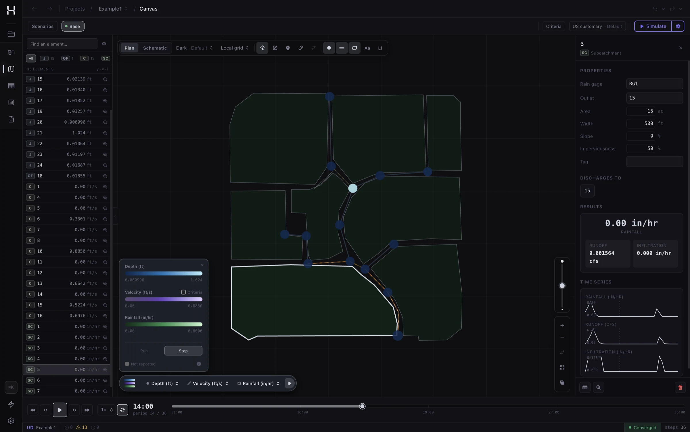
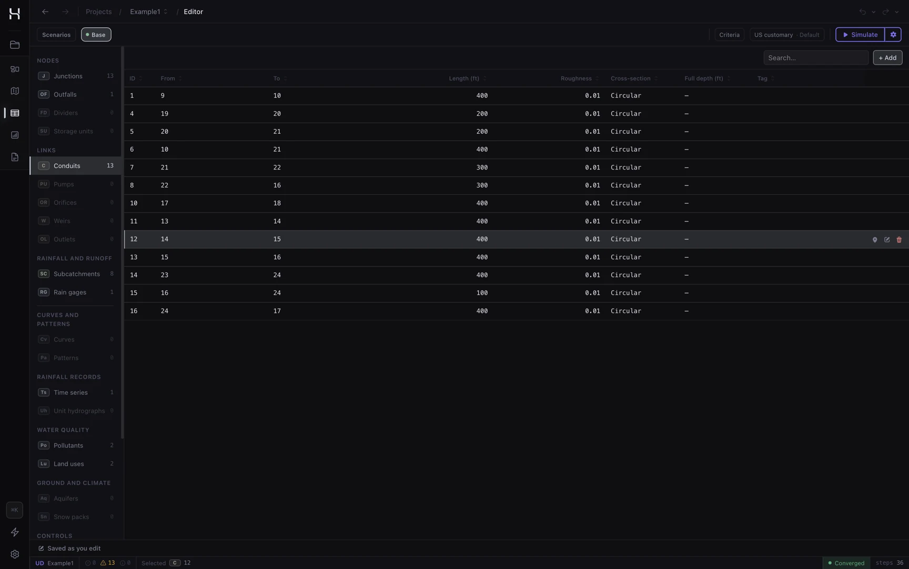
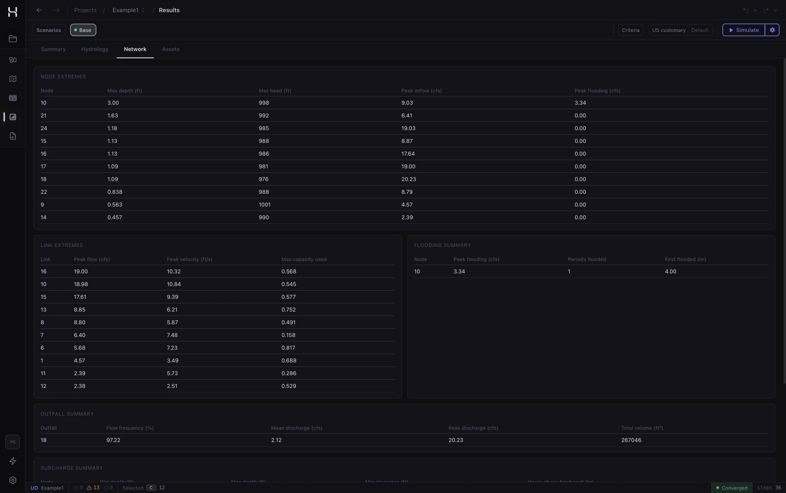
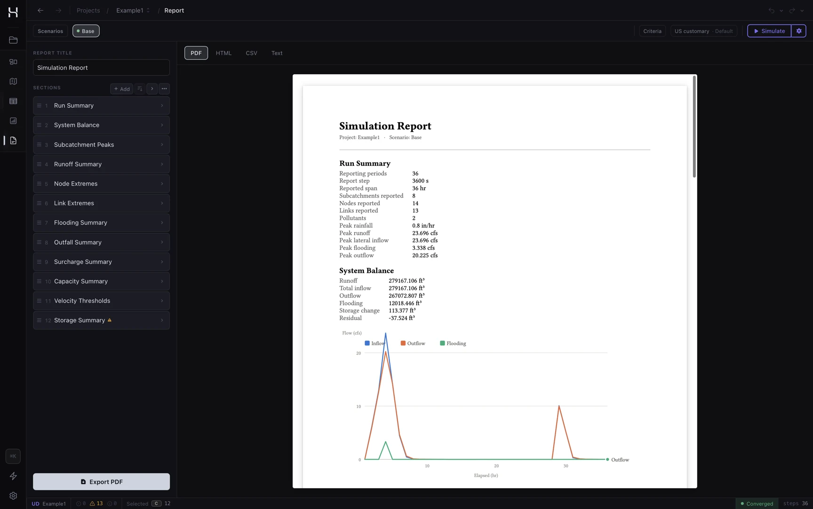
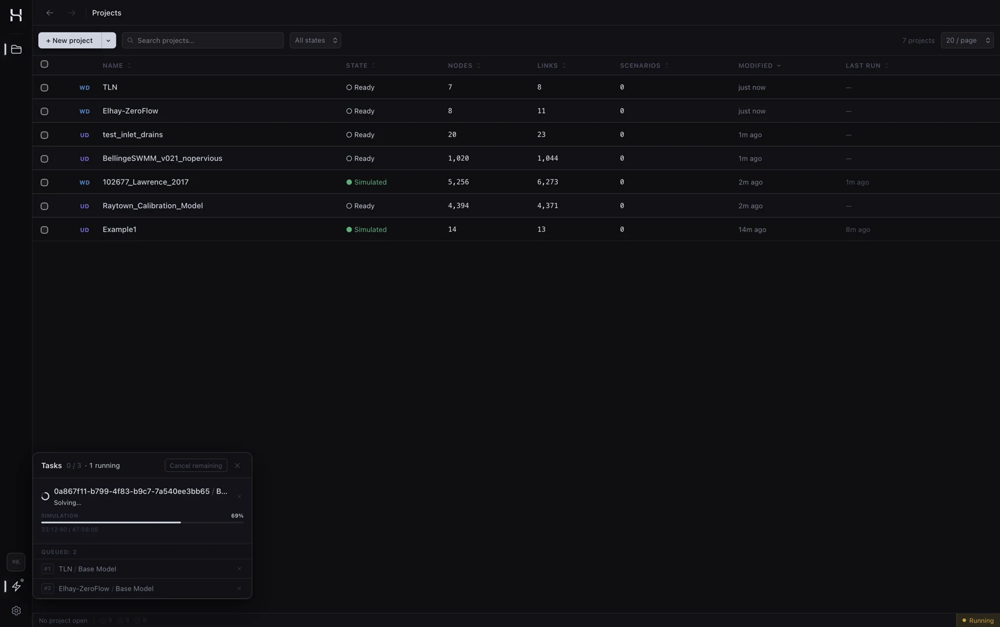

Water infrastructure simulation, from tap to outfall.
A suite of domain engines behind one toolchain, written in Rust.
Import a model, run
it, and read the same report everywhere: in the desktop app, from
the command line, through the Rust SDK, or right here in your
browser.
hydra run
EPANET Example Network 1 Number of Junctions................ 9 Number of Pipes ................... 12 Quality Analysis .................. Chlorine Total Duration .................... 24.00 hrs Analysis begun Mon Aug 17 13:50:54 2026 Analysis ended Mon Aug 17 13:50:54 2026
Example 1 Flow Units ............... CFS Flow Routing Method ...... DYNWAVE Surcharge Method ......... SLOT Total Precipitation ...... 15.679 2.650 Surface Runoff ........... 6.251 1.057 Continuity Error (%) ..... 0.000
2engines, one for each networkWater distribution and urban drainage, each owning its data model end to end.
4ways to run a modelDesktop app, CLI, Rust SDK, and the browser. The same engine code runs everywhere.
0uploads, everThe browser demo reads, solves and reports your model in your own tab.
Why simulate
What is this for?
Every city runs on buried networks: one delivers drinking water
under pressure, and drainage systems carry rain and wastewater
away. All are expensive to dig up and impossible to experiment
on, so
engineers answer their questions on a model first. Hydra is where
those questions get asked: try things against the physics before
committing to concrete.
Will pressure hold at peak demand?
Morning showers and lawn watering pull hard on a network. Simulation shows the pressure at every junction, hour by hour, before anyone's tap runs weak.
Can hydrants deliver during a fire?
Fire flow is the stress test of a water network. Add the fire demand at the hydrant's junction and rerun; pressure-driven analysis shows the residual pressures and the shortfall honestly.
Is the water still fresh at the edge of town?
Water ages in pipes and disinfectant decays along the way. Run a water-age analysis, model chlorine decay, or trace the share of water arriving from any source, out to the farthest junctions.
Which streets flood in a heavy storm?
Feed a design storm to the drainage model and see where the network surcharges and floods, and how much water it loses, before it happens outside.
Can the sewers take a new development?
New rooftops and parking lots shed more water, faster. Check the downstream pipes before approving the plans.
Do rain gardens pay off?
Model green infrastructure on the catchments and read how much runoff it actually keeps out of the sewers.
These are the daily questions of water utilities, city public
works departments, engineering consultancies, and the researchers
and students learning the field. Hydra gives them one open,
modern toolchain for both buried networks.
The engines
One engine for each network
Hydra reimplements the models behind EPANET and SWMM with its
own solvers. Each engine owns its data model end to end: reader,
solver, and report. Correctness is defined by
Hydra's own convergence criteria
and physical conservation laws, and because the outputs are
file-compatible, you can run Hydra beside your current tool on
your own models and diff the results.
Water distribution
EPANET data model
A Global Gradient Algorithm hydraulic solver and a Lagrangian
water quality engine. Reads any EPANET 2.x
.inp file; writes EPANET-compatible binary results
and text reports.
Urban drainage
SWMM data model
Rainfall-runoff hydrology, Preissmann-slot dynamic-wave
routing of the Saint-Venant equations, and water quality on
the SWMM data model: infiltration, LID controls, snowmelt,
groundwater, pollutant transport.
Bring the models you already have
Reads your files
Any EPANET 2.x .inp file opens as-is, and SWMM 5
models open directly; the engine is detected from the model's
contents, never its file extension. Drainage models built for
steady or kinematic-wave routing run under the full
dynamic-wave solver, and the import says so.
Writes their formats
Results land as EPANET- and SWMM-compatible binary
.out files, faithful to the byte layout, so
tools that read them keep working. Text reports follow the
predecessors' layout with documented differences.
Repairs on import
Provably safe fixes are applied automatically on import,
never destructively, and every repair is reported so you can
review what changed.
Import a model, edit the network on a map, run scenarios in a
background queue, and explore results. Both engines are
supported.
CLI
Run hydra run model.inp. The model's own sections
identify the engine, and the run writes the report and the
binary results; hydra report renders analytics
from them.
Rust SDK
The engines as a library. One crate,
hydra-sdk, is the public API the desktop app and
CLI are themselves built on.
Browser
The real engines, compiled to WebAssembly.
Drop a model on the demo, or run one of
its bundled examples. It prints the engine's report in your
tab and uploads nothing; the map and editor live in the
desktop app.
The desktop app, up close
Import a model, edit it on the canvas, run scenarios in a
background queue, and play results back over the network.
Hydra

The canvas: the network in plan, results played back in time.
Hydra

The editor: every element in tables built for bulk edits.
Hydra

Results: node and link extremes, flooding and outfall summaries.
Hydra

The report builder: charts and tables from saved templates.
Hydra

The run queue: simulations solve in the background while you work.
Build on Hydra
Everything the official apps do goes through
hydra-sdk, and your code gets the same contract:
parse a model, run it, read any result at any time.
use hydra_sdk::{io, Simulation, NodeQuantity};let network = io::parse(&bytes)?;let mut sim = Simulation::create();sim.load(network)?;sim.run()?;for t in sim.snapshot_times() {let head = sim.get_node_result("J1", NodeQuantity::Head, t)?; println!("t={t:.0}s head={head:.3}");}
Features
Everything in the box
Scenarios and run queue
Variants of one model, simulated in a background queue while you keep working.
Report builder
Saved templates rendered to text, CSV, HTML, or PDF, with charts.
Post-run analytics
Demand reliability, service compliance, rankings, and distributions computed from results.
Map canvas
Basemap providers, a coordinate-system catalog, and timeline playback over the network.
Controls and rules
Simple and rule-based controls in the water engine; SWMM control rules with PID-modulated actions in the drainage engine. Deliberate deviations are documented and flagged at import.
Hydrology in depth
Infiltration families, green-infrastructure (LID) controls, snowmelt, groundwater, and rainfall-derived inflow (RDII) for drainage models.
Water quality
Constituent transport, age, and source tracing; buildup, washoff, and treatment.
Checkpoint and resume
Save a finished run's state from the CLI and resume a longer run from it; the resumed results match an unbroken run exactly.
Design criteria
Engine-defined criteria with editable thresholds, painted as compliance bands over the canvas and reported in analyses.
Self-updating app
The desktop app checks for signed updates and installs them in
place on macOS, Windows, and the Linux AppImage.
Open source
AGPL-3.0, developed in the open, with a commercial license available.
Benchmarks
Measured against the engines they replace
Each engine is benchmarked against its predecessor on published
networks: release builds of both, the same machine, best of
three runs. Where results still differ, the difference is
documented in the specification with its cause. Nothing is
unexplained, for either engine.
Drainage, against SWMM 5.2.4
0.95×SWMM's runtime on Bellinge's stormPublished 1,020-node network; 1.04× across its full 48 h
1.5%of steps end unconvergedError-controlled stepping; SWMM leaves 36% unconverged over the same 48 h
0unexplained differencesEvery corpus delta fixed, or documented with its cause
Water distribution, against EPANET
95.4%of 2.6M node pressures matchWithin 0.1, across 11 published research networks
1.0–1.2×EPANET's runtime on the setBalerma, BWSN, D-Town, Exeter, Kentucky, NY Tunnels
2nd ordertank integration, with an error boundThe one runtime trade; EPANET's own scheme is a flag away
Method, full tables, and how to reproduce them on your own
machine are in the
performance reference.
A tracked baseline gates every change on both runtime and peak
memory, so these numbers cannot quietly rot.
Licensing
Free software, with a commercial path
AGPL-3.0
for everyone
Free to use for any work, including client projects, with
nothing owed: running Hydra and delivering the results,
models, or reports is not distribution, so the AGPL asks
nothing of you.
Commercial license
for products
Ship Hydra inside a product, or serve it to others over a
network? A
commercial license
is priced per deal by seats, term, and support tier. Enquire
at matthew@neer.ai.
Download
Runs where you work
macOS
.dmg disk image or portable .app.tar.gz, Apple Silicon.
Windows
.msi or .exe installer.
Linux
.AppImage, .deb, or .rpm package.
The latest desktop release and its notes are on the
releases
page. Prefer the terminal? cargo install hydra-cli
(needs Rust; prebuilt binaries are on the releases page) puts the
same engines behind one command.
FAQ
Questions, answered plainly
Does my model ever leave my machine?
No. The desktop app, the CLI, and the SDK run entirely on your
machine. The browser demo runs the engines in your own tab and
uploads nothing.
Do I have to convert my EPANET or SWMM files?
No. Hydra reads any EPANET 2.x .inp and SWMM
.inp file directly, and writes results in their
compatible binary and text formats.
Is Hydra free?
Yes: free software under AGPL-3.0. Products that do not want
AGPL obligations can use a separate
commercial license,
priced per deal by seats, term, and support tier, with
priority support under a negotiated service level. Enquire at
matthew@neer.ai;
community support lives in
GitHub Discussions.
What platforms does the desktop app support?
macOS (Apple Silicon), Windows, and Linux. There is no Intel
Mac build. The CLI
additionally installs anywhere Rust does, with
cargo install hydra-cli.
Can my firm use Hydra on client projects?
Yes, with nothing owed: running Hydra on client work and
delivering the results, models, or reports is not
distribution, so the AGPL asks nothing of you. The line is
distributing Hydra itself or serving it to others over a
network; embed it in a product you ship and the
commercial license
is for you.
I'm learning water modelling. Is Hydra for me?
Yes. Hydra speaks the industry-standard EPANET and SWMM
formats and models the same physics, so everything you learn
here transfers directly to the tools utilities and
consultancies already run, and it costs nothing. Start with
the demo's bundled examples, then
Key Concepts
in the docs. Questions are welcome in
Discussions.
Who builds Hydra?
One engineer: Matthew Downs, at NEER AI, building in the
open. That cuts both ways, so the project is structured so
nothing depends on trusting one person: the full source is
public and forkable, every solver behaviour is written down
in specifications, and your models stay in standard EPANET
and SWMM files that any tool can read. If Hydra vanished
tomorrow, you would keep everything.
Can the browser demo handle large models?
Small and medium models run fine. But the demo lives in one
browser tab, and browsers cap what a tab can hold, so a large
network with captured .out results will hit
limits the native builds do not have. The desktop app, the
CLI, and the Rust SDK stream results from disk. Use the demo
to try Hydra, and run big models natively.
Can I build my own tools on Hydra?
Yes. The hydra-sdk crate is the public API the
official apps are built on, and the
SDK documentation covers
it end to end. It compiles to WebAssembly too.
Run your first model in the next minute
No install, no account, no upload, and no model needed: the demo
ships classic EPANET and SWMM examples. It runs the real engines
on your machine.